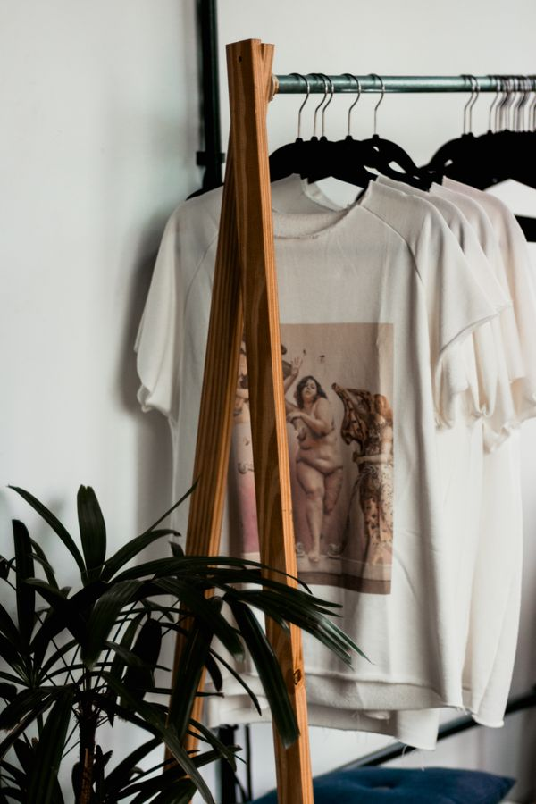
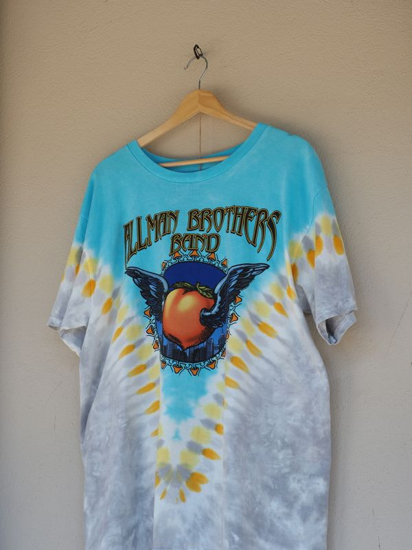

Pasión por la música
Nos guían los sonidos que acompañan una época, un viaje o una tarde de búsqueda entre discos.
RetroWave nace de esos discos que todavía guardan una historia, de las prendas que se vuelven parte de un recuerdo y de la energía que queda después de un gran show.


RetroWave es una marca nacida del vínculo entre la música, las prendas y los recuerdos que se quedan con nosotros. Nos inspiran las tapas gastadas, los afiches guardados y las remeras que cuentan dónde estuvimos.
Pensamos cada colección como una conversación abierta: un cruce entre sonidos que vuelven, imágenes que llaman la atención y formas personales de armar estilo.
Para quienes encuentran una canción y sienten que también encontraron algo propio.
Nos guían los sonidos que acompañan una época, un viaje o una tarde de búsqueda entre discos.
Elegimos referencias visuales que invitan a mezclar, reinterpretar y hacer propia cada prenda.
Celebramos los gustos compartidos, los descubrimientos recomendados y las historias que se cruzan.

La repetición de un surco, una portada que se reconoce al instante y el ritual de elegir qué suena primero.

Tipografías, estampados y colores que transmiten una sensación antes de decir una palabra.
Hay canciones que se recuerdan por cómo sonaron en vivo. Nos inspira esa mezcla de movimiento, luces y encuentros.